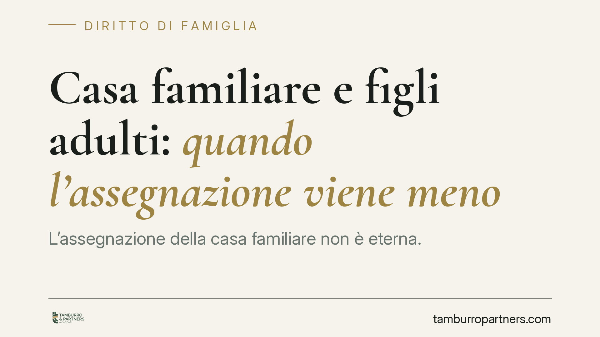

Casa familiare e figli adulti: quando l'assegnazione viene meno
L'assegnazione della casa familiare non è eterna. La giurisprudenza di merito conferma che, con figli adulti e di fatto autonomi, il beneficio tende a venire meno: non esiste però una soglia d'età automatica. Rileva anche la natura, tipica o atipica, delle clausole inserite negli accordi di separazione e divorzio. Ecco cosa cambia per il genitore proprietario.

Il punto della questione
L'assegnazione della casa familiare è una delle decisioni più delicate nelle separazioni e nei divorzi. Un orientamento della giurisprudenza di merito torna a chiarire due aspetti spesso fraintesi: quando il beneficio può cessare in presenza di figli ormai adulti e come vanno trattati gli accordi economici "atipici" che le parti inseriscono nei verbali.
Va detto subito, per evitare equivoci diffusi: i 25 anni non sono una soglia automatica. L'età è solo un indizio. Ciò che conta è la reale condizione del figlio.
Inquadramento normativo
La norma di riferimento è l'art. 337-sexies c.c., che disciplina l'assegnazione della casa familiare. Il principio cardine è spesso frainteso: la casa non viene assegnata per tutelare il coniuge economicamente più debole, ma per proteggere l'interesse del figlio a conservare l'ambiente domestico in cui è cresciuto.
Ne discende una conseguenza logica. Quando quell'interesse viene meno, perché il figlio ha raggiunto l'autonomia economica e abitativa o ha comunque reciso il legame stabile con quella casa, viene meno anche il presupposto dell'assegnazione. La legge, non a caso, àncora il beneficio alla presenza di figli non autosufficienti, non a un limite anagrafico fisso.
Quanto agli accordi economici, l'art. 1322 c.c. riconosce alle parti autonomia nel pattuire clausole "atipiche", cioè non riconducibili alle statuizioni tipiche del giudizio di famiglia (mantenimento, assegnazione della casa, affidamento). È qui che si gioca la distinzione pratica più importante.
Statuizioni tipiche e accordi atipici: una distinzione decisiva
Le statuizioni tipiche (assegno di mantenimento, assegnazione della casa) restano modificabili dal giudice della famiglia quando mutano le circostanze: è il meccanismo della revisione delle condizioni, disciplinato dalle norme del rito sulla famiglia introdotte nel codice di procedura civile (Titolo IV-bis).
Gli accordi atipici seguono invece una logica diversa. Essendo veri e propri contratti, non possono essere riscritti dal giudice della famiglia in sede di revisione. Attenzione, però: questo non significa che siano intangibili. Restano aggredibili con i rimedi civilistici ordinari, come la nullità, l'annullamento, la risoluzione per inadempimento o la rescissione. La differenza riguarda lo strumento e la sede, non l'assoluta immodificabilità.
Aggiungiamo una cautela: il confine tra clausola tipica e atipica non è sempre netto. Una stessa pattuizione può presentare elementi di entrambe, e la qualificazione concreta determina quale rimedio sia esperibile.
Implicazioni pratiche per il genitore proprietario
Per chi è proprietario dell'immobile assegnato all'ex coniuge, il messaggio è duplice.
Da un lato, l'assegnazione non è un vincolo perpetuo: la raggiunta autonomia del figlio adulto è una circostanza che può legittimare la richiesta di revoca. Ma va dimostrata, non presunta.
Dall'altro, se in sede di accordo sono state inserite clausole economiche atipiche, non ci si può aspettare che il giudice della famiglia le "corregga" se col tempo risultano sbilanciate. L'eventuale contestazione andrà incanalata nei rimedi contrattuali propri, con tempi e presupposti differenti.
Cosa fare in concreto
- Documentare l'autonomia del figlio. Raccogliere prove concrete: contratto di lavoro, buste paga, un'autonoma residenza o domicilio stabile altrove, continuità reddituale. L'onere grava su chi chiede la revoca.
- Qualificare correttamente le clausole. Prima di contestare un accordo, verificare se la pattuizione sia tipica (rivedibile dal giudice della famiglia) o atipica (soggetta ai rimedi contrattuali).
- Scegliere la sede giusta. Per le statuizioni tipiche, procedere con la revisione delle condizioni; per gli accordi atipici, valutare l'azione civilistica appropriata (nullità, risoluzione, rescissione).
- Evitare l'equivoco dell'età. Non fondare la richiesta sul solo compimento dei 25 anni: va provata la condizione reale del figlio.
- Valutazione preventiva in fase di accordo. È opportuno esaminare con attenzione natura ed effetti delle clausole atipiche prima di proporle o accettarle, perché i rimedi successivi sono più complessi.
Disclaimer
Contributo informativo a cura di Tamburro & Partners Avvocati. Non costituisce parere legale.
Ogni famiglia ha il suo equilibrio.
Separazione, divorzio, affidamento, assegno: se vuoi un confronto riservato su una specifica situazione, scrivi allo studio. Ti rispondiamo entro un giorno lavorativo.